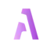
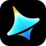

МолекулаАгрегаторы нейросетей
Молекула объединяет модели для текстов, изображений, видео и музыки. В одном аккаунте можно подобрать инструмент под этап работы, сохранить инструкции проекта и использовать готовые роли.
К задаче в МолекулеГенерация изображений: Используйте один запрос для нескольких сервисов. Сравните композицию, детали, работу с референсом и возможности редактирования.
Сделайте иллюстрацию к материалу о домашней библиотеке, описав её содержание словами. Укажите предметы, композицию и цветовую гамму; оставьте место под заголовок и проверьте читаемость изображения в размере карточки статьи.
Нарисуй иллюстрацию для статьи о домашней библиотеке: деревянный стеллаж, кресло и светильник, тёплая палитра. Справа оставь спокойное пустое пространство под заголовок, букв и надписей не добавляй.

Молекула объединяет модели для текстов, изображений, видео и музыки. В одном аккаунте можно подобрать инструмент под этап работы, сохранить инструкции проекта и использовать готовые роли.
К задаче в Молекуле«Ai Art Generator» готовит визуальные материалы по заданию. «Ai Art Generator» также создаёт видеоматериал по заданию.
Сравнивать «AI Coloring Pages (aicoloringpages.net)» с другими инструментами раздела «Генерация изображений» удобнее на одинаковом исходном материале.
«AI Photo Wizard» готовит визуальные материалы по заданию.
AI-Powered QR code создаёт персонализированные QR-коды через онлайн-инструмент с ИИ. Внешний вид можно настроить под визуальный стиль бренда. Продукт предназначен для подготовки такого кодового изображения под разные задачи и отрасли, связывая графическое оформление с узнаваемой идентичностью организации в конечном материале.
«AIEpics» готовит визуальные материалы по заданию.
Aiphoria.io преобразует исходные фотографии средствами ИИ и предлагает выбор оформления. Пользователь задаёт стиль, после чего получает новый вариант снимка. Визуальное направление связано с фотореалистичной подачей: сервис сочетает работу с уже существующим изображением и применение выбранной манеры для подготовки его другого представления.
AnimeBuilder подготавливает аниме-варианты изображений с помощью ИИ и текстового ввода. Пользователь может выбирать из нескольких стилей обработки. Онлайн-инструмент связывает исходную картинку и описанный замысел, чтобы рассматривать выбранную визуальную подачу при создании стилизованного изображения по своему запросу.
«APOB AI (app.apob.ai)» готовит визуальные материалы по заданию. «APOB AI (app.apob.ai)» также создаёт портретные и аватарные изображения.

Aragon.ai подготавливает деловые портреты из фотографий человека. При выборе результата нужно учитывать узнаваемость лица и назначение изображения в профиле.

ArtAny.ai используют для задачи: менять фотографии с учётом выбранного оформления. Ещё одно направление работы: получать изображения из словесного задания.

Artefacts.ai используют, чтобы готовить трёхмерный объект для проекта. Ещё одно направление работы: получать изображения из словесного задания.

ArtGeneration.me используют для задачи: получать изображения из словесного задания. Ещё одно направление работы: собирать видео с цифровым ведущим.
«Artology AI» готовит визуальные материалы по заданию. Дополнительно «Artology AI» готовит текстовый черновик по условиям задачи.
«Bright Eye» помогает готовить изменения программного кода.
Chad AI объединяет языковые и творческие модели в русскоязычном окне. Среди направлений представлены тексты, изображения и видео, а также музыкальная генерация. Пользователь работает с разными нейросетями через общий сервис, рассчитанный на доступ из России и оплату российскими картами.
«Cheese AI» готовит визуальные материалы по заданию.

Civitai объединяет материалы сообщества для визуальной генерации. Перед применением в проекте стоит изучить назначение модели и условия использования результата.
«Colorin AI» подготавливает контурные изображения для раскрашивания.

Dreamina рассчитан на задачи, где нужно собирать видеосцену по описанию или визуальному исходнику. Ещё одно направление работы: готовить видеоматериалы для публикации.

EvoLink рассчитан на задачи, где нужно собирать видеосцену по описанию или визуальному исходнику. Ещё одно направление работы: получать изображения из словесного задания.
«Freeflo» готовит визуальные материалы по заданию.
«Grok AI Image Generator 2.0» готовит визуальные материалы по заданию.
«Hiber 3D» подготавливает трёхмерные объекты.
HitPaw Image Generator создаёт художественные изображения по пользовательскому описанию. Среди приведённых направлений есть аниме и киберпанк, а доступ предусмотрен через веб-среду, Android и iOS. Инструмент связывает словесный замысел с генерацией рисунка, позволяя работать с выбранным художественным оформлением на разных устройствах.
«Imagine Anything» готовит визуальные материалы по заданию.
«IP Adapter FaceID» готовит визуальные материалы по заданию.

Kling AI создаёт видео и изображения по описанию и исходным кадрам. Для коротких сцен полезно заранее определить действие, движение камеры и признаки, которые должны сохраняться.

В инструменте «Krater» можно собирать видеосцену по описанию или визуальному исходнику. Ещё одно направление работы: получать изображения из словесного задания.

Looka используют для задачи: создавать основу сайта или приложения. Ещё одно направление работы: получать изображения из словесного задания.
Magnific Image Generator создаёт изображения по словесному описанию. Прежний адрес генератора Freepik ведёт на этот инструмент в Magnific.
«MemeCam» представлен в разделе «Генерация изображений». При выборе проверьте нужную операцию и условия работы с результатом.
Miro AI помогает работать с содержанием командной доски: развивать идеи, оформлять планы и готовить визуальные рабочие материалы в контексте проекта.
«myfashion AI» представлен в разделе «Генерация изображений». При выборе проверьте нужную операцию и условия работы с результатом.
«Neuralblender» готовит визуальные материалы по заданию.
В инструменте «Neurosphere» можно собирать видеосцену по описанию или визуальному исходнику. Ещё одно направление работы: получать изображения из словесного задания.
Для «NQRT» сначала определите свою задачу и требуемый результат. Карточка относится к направлению «Генерация изображений».
«Phantasmagoria» готовит визуальные материалы по заданию.
PhotoAiD подготавливает фотографии для документов в онлайн-сервисе и приложении. ИИ используется для кадрирования снимка, удаления или смены окружения и проверки формальных требований к паспорту, визе или удостоверению. Продукт ориентирован на такие фото; окончательную пригодность следует сверять с правилами конкретного органа, принимающего документ.
Сравнивать «PicLumen Image Generator» с другими инструментами раздела «Генерация изображений» удобнее на одинаковом исходном материале.
«Pirate Diffusion» готовит визуальные материалы по заданию. «Pirate Diffusion» создаёт портретные и аватарные изображения.
«Pixelz AI» готовит визуальные материалы по заданию.
«QRCode AI» помогает готовить изменения программного кода.
Сравнивать «Qriginals» с другими инструментами раздела «Генерация изображений» удобнее на одинаковом исходном материале.
«RenderNet AI» готовит визуальные материалы по заданию.
«Salvador - DALL-E3 UI» готовит визуальные материалы по заданию.
Splend AI объединяет визуальные модели для создания художественных изображений по описанию. Пользователь может выбрать готовый стиль или подготовить собственный вариант. В сценариях представлены генеративное искусство и NFT, позволяющие использовать создаваемый материал в разных формах визуальной работы с цифровыми изображениями.

StarryAI создаёт изображения из текстового описания с участием ИИ. Пользователь задаёт замысел словами и настраивает полученный визуальный вариант. Приложение представлено для мобильных устройств на iOS и Android, позволяя работать над художественным изображением в выбранной среде своего телефона.
Страница 1 из 14
Для обложки статьи о городской теплице заранее определите положение главного объекта и область под название. Сложная сцена может красиво выглядеть отдельно, но мешать чтению в карточке публикации. Опишите палитру, освещение и количество деталей, затем проверьте результат в настоящем размере блока.
Текст заголовка лучше сохранять отдельным слоем. Тогда его можно менять без повторного создания всей картинки. Для первого сравнения используйте одинаковый сюжет и соотношение сторон. Разные задания не покажут, какой инструмент лучше подходит к вашему рабочему процессу.
Midjourney помогает искать художественное направление с помощью описания и референсов. Оценивайте композицию, характер рисунка и сохранение выбранной манеры между вариантами. Для серии иллюстраций покажите изображения рядом: различия в детализации становятся заметнее, чем при последовательном просмотре.
Recraft предлагает работу с растровой и векторной графикой. Он интересен, когда после генерации потребуется менять формы и цвета отдельных элементов. Экспортированный вектор нужно открыть в своём редакторе и проверить возможность реальной доработки.
Сравнивайте инструменты по назначению файла. Для обложки полезен цельный образ, а для иконки важны простой силуэт и редактируемость. Не оценивайте векторный набор только по эффектному большому превью: проверьте каждый значок в размере будущего меню.
Откройте выбранную картинку в полном размере. Проверьте соединения предметов, отражения и повторяющиеся узоры. Затем добавьте утверждённый заголовок и посмотрите макет с телефона. Если фон спорит с текстом, измените композицию, а не только увеличьте шрифт.
Сохраните исходное изображение до кадрирования и зафиксируйте принятый вариант. Для референсов проверьте разрешённое использование, для коммерческого материала условия выбранного режима. Дополнительные этапы обработки представлены в разделе работы с фотографиями; переход к ним имеет смысл после выбора композиции.